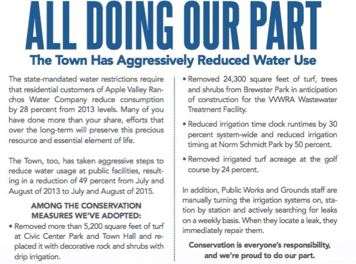

By Kerry Henard
In February 2016, the Town of Apple Valley put out a special edition
newsletter about water issues. One of the articles claimed that the Town was doing its part in the cause of water conservation.
Let’s check and see how the Town is doing, given that water is especially important in desert environments such as ours.
The Town promises we’ll have local control
of our water, once it spends hundreds of millions of dollars to buy what we already have. As you can see, local control
is very effective, if wasting water is the goal.

From the Town’s February 2016 Special Edition
newsletter.